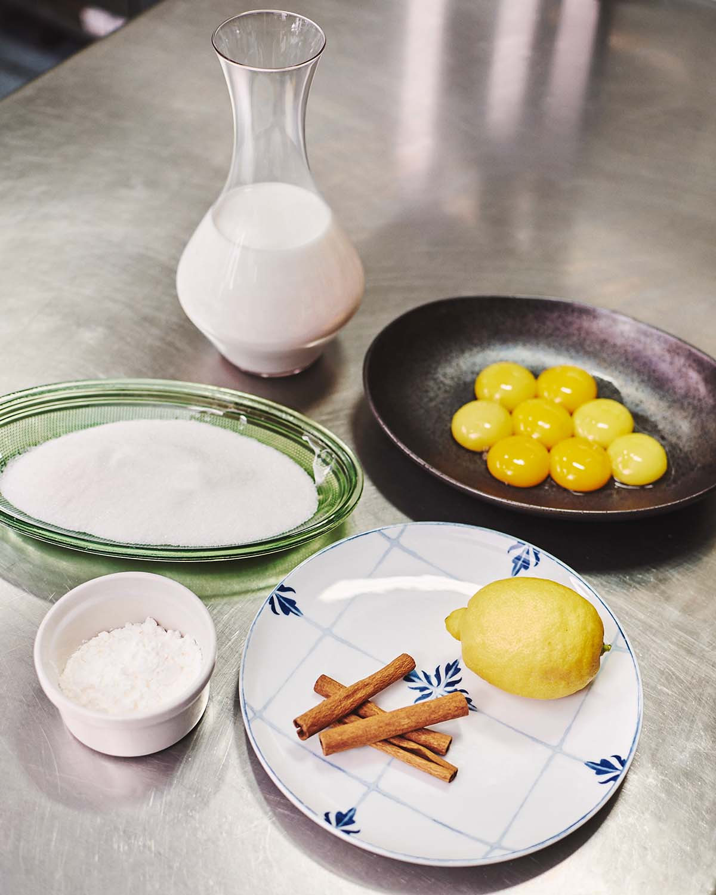
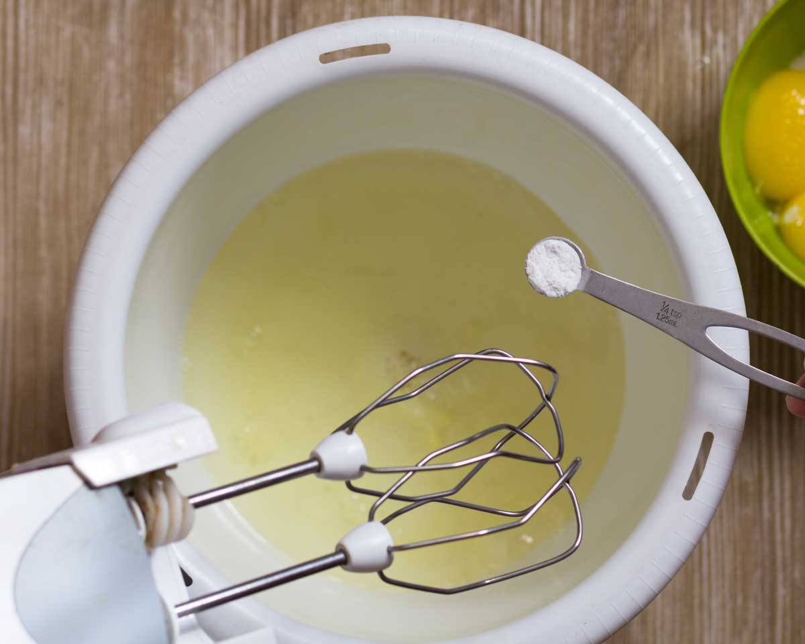
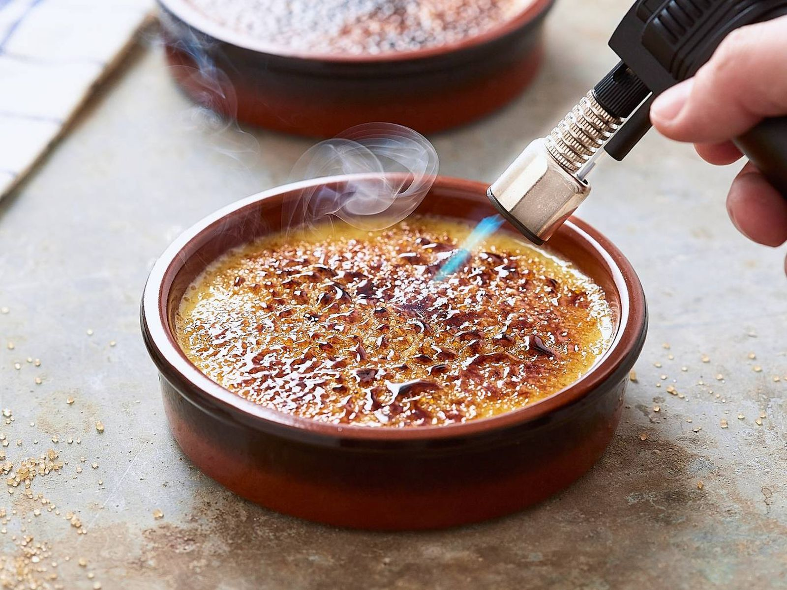
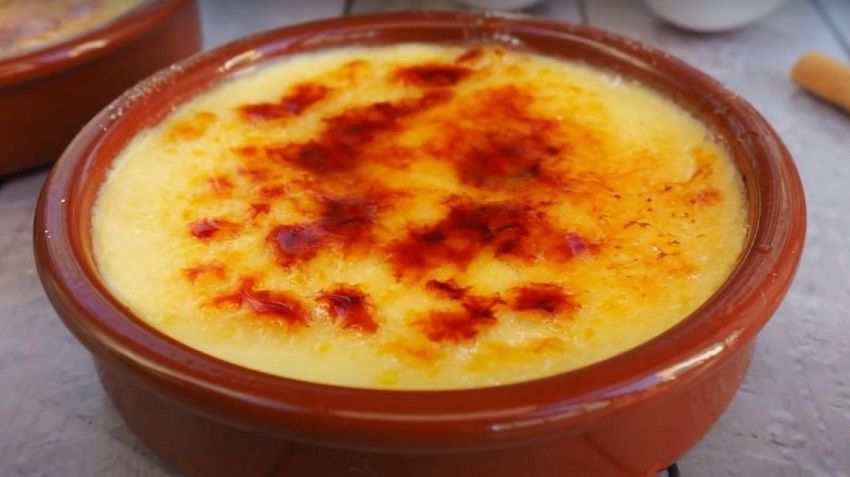

Tornar a l'inici
Ingredients
- 500 ml de llet
- 4 rovells d'ou
- 80 g de sucre
- canyella i pell de llimona
- sucre extra per cremar
Pas a pas
- Escalfar la llet amb la llimona i la canyella fins a punt d'ebullició. 
- Batre 4 rovells d'ou amb 80 g de sucre i afegir la llet calenta a poc a poc. 
- Coure a foc suau fins que espesseixi, refredar i cremar sucre per sobre abans de servir. 
Resultat final
Aquí tens el plat llest per servir:

Tornar a l'inici de la recepta